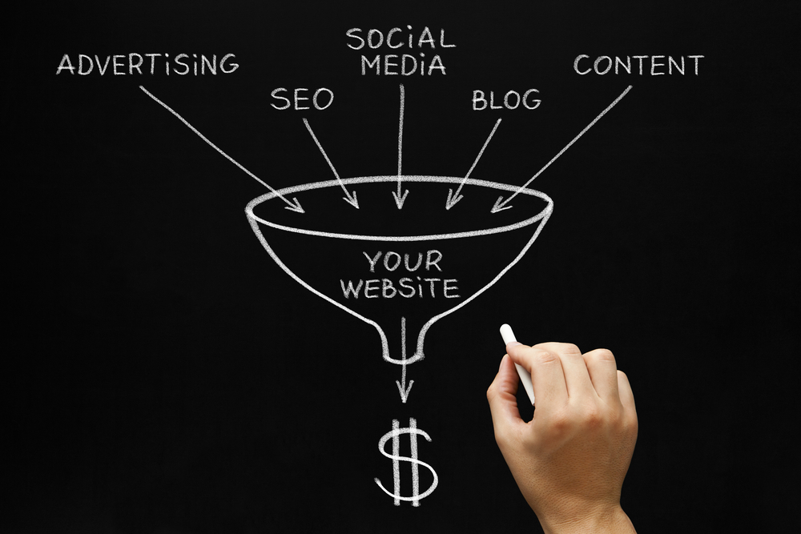

- 內容目錄
- 網路行銷是什麼？
- 網路行銷平台有哪些？
- 搜尋引擎優化SEO
- 內容行銷Content Marketing
- 付費廣告行銷Paid Marketing
- 社群行銷Social Media Marketing
- 網紅行銷、KOL 行銷
網路行銷是什麼？
網路行銷（On-line Marketing, Digital Marketing 或 E-Marketing）是一種新型的市場行銷方式，透過數位科技管道來行銷產品或服務，也被稱為「數位行銷」。網路行銷包括：
搜尋引擎行銷、展示型廣告、EDM行銷、會員行銷、互動式行銷
…等多種方法，1990－2000年隨著網路發展蓬勃，加上智慧型手機的普及率提高，消費者逐漸改變原有的消費模式，2007年後網路行銷趨勢開始急遽發展，網路行銷已然成為企業行銷策略中不可或缺、最重要的一環行銷策略。

網路行銷平台有哪些？
網路行銷的手法範圍很廣，包括搜尋引擎優化SEO、內容行銷Content Marketing、社群網路行銷Social Media Marketing、電子郵件行銷Email Direct Marketing、付費廣告行銷Paid Marketing、媒體與部落客行銷Affiliate Marketing等等。這些網路行銷手法仰賴新科技的出現才得以實施，從不同的面向影響消費者，以下將會一一介紹。
搜尋引擎優化SEO
「SEO搜尋引擎優化」是透過網站優化、關鍵字優化等方法，來提高網站在搜尋結果的排名。企業檢視自己的產品及服務後，決定網站的目標關鍵字，就可以開始進行關鍵字研究並置入關鍵字在網站內容中，同時優化網站結構。
如此可以得到搜尋引擎的高分、在搜尋結果頁面擁有較好的排名，消費者在搜尋相關關鍵字時你的網站更容易接觸到他們。
內容行銷Content Marketing
網路崛起的年代，消費者每天接受爆炸性的訊息量，他們對推銷產品的內容感到厭倦疲乏。「內容行銷」透過創造對顧客有價值的內容，吸引消費者一而再、再而三地造訪你的網站，提高顧客忠誠度以及網站的名單轉換率。
「內容行銷」不只是網路行銷手法，更是數位行銷的核心，它被運用在網路行銷的所有面向中，包括搜尋引擎優化SEO、社群網路行銷、電子郵件行銷等等。
付費廣告行銷Paid Marketing
用一句話來形容「付費廣告行銷」，那便是在網路上的廣告。廣告行銷包含社群平台如Facebook廣告、關鍵字廣告、及Google聯播網廣告等。
與傳統廣告（公車廣告、看板廣告等等）相比，除了廣告通路不同之外，數位廣告利用數據分析精準地找到關鍵受眾，可以追蹤每筆廣告的成效，有效得知受眾對於廣告的反應。更可以利用「再行銷Retargeting」 針對造訪過網站的潛在客群再持續投遞廣告，提高轉換率並降低廣告成本。
社群行銷Social Media Marketing
與其說「社群行銷」是一種網路行銷手法，不如說「社群行銷」是企業與消費者建立連結的機會更恰當。
社群網站已經成為現代人生活的一部份，幾乎所有的企業都在社群平台上建立自己的品牌以增加曝光度。與其他網路行銷手法不同的是，「社群行銷」的主要目的不在於銷售，消費者使用社群網路的目的在於休閒、與他人互動，因此過於刻意地銷售產品會引起消費者反感，企業應該利用「社群行銷」增加消費者互動、建立消費者好感、提高品牌忠誠度的機會。
網紅行銷、KOL 行銷
「網紅行銷」利用特定媒體，或是在社群中有影響力的人物（KOL），藉由他們的影響力來影響潛在顧客的購買慾望，例如：邀請知名部落客在他的部落格上推薦我們的產品，可以被視為「網紅行銷」的一部份。
「網紅行銷」之所以在網路行銷中佔有重要地位，是因為現在的消費者每天接觸大量的廣告，他們不再輕易對廣告文宣買單，反而青睞部落客，或是他人親身使用之後的經驗分享，對客戶來說是更為可靠的資訊。
值得注意的是，並不是任何在網路上有名氣的KOL都適用「網紅行銷」，企業必須找出在該領域（例如親子教育、飲料調製、烘焙教學等）適合合作的對象，挑選真正能影響目標市場的「影響人物Influencer」，再與之合作推廣產品。
資料來源: